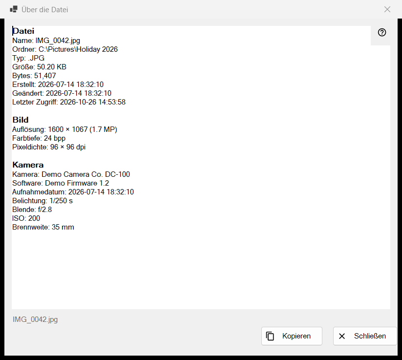
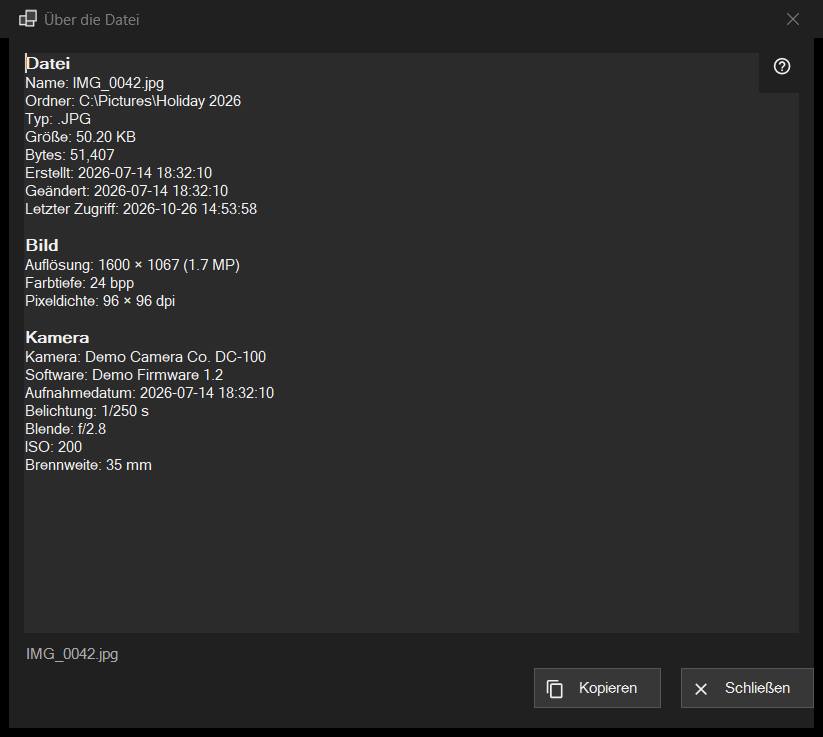

Über die Datei
Verwendungszweck
Ein schreibgeschützter Schnappschuss dessen, was das Programm über die Datei auf dem Bildschirm weiß: die Datei selbst, ein Bild mit seinen Kameradaten, ein Dokument sowie die Audio- und Videospuren. Es öffnet sich über das i-Element des ersten Panels oder über Über die Datei im Dateiblock der Viewer-Menüs und beschreibt die Datei so, wie sie im Moment des Klicks war.


In dieser Reihenfolge
- Zeigen Sie eine Datei im Viewer an.
- Klicken Sie auf das i-Element des ersten Panels oder wählen Sie im Menü Über die Datei.
- Warten Sie einen Moment: Die Statuszeile zeigt Datei-Metadaten werden gelesen.., und die Zeilen füllen sich.
- Lesen Sie die Blöcke, markieren Sie, was Sie brauchen, und drücken Sie auf Kopieren, um den ganzen Text in die Zwischenablage zu legen.
- Drücken Sie auf Schließen oder Esc.
Die Elemente
Datei
Diesen Block hat jede Datei: Name, Ordner, Typ, Größe, Bytes, Erstellt, Geändert, Letzter Zugriff und Attribute. Eine Zeile ohne anzuzeigenden Inhalt entfällt. Ist keine Datei geöffnet, sagt die Statuszeile Keine Datei ausgewählt; bei einer temporären Kopie aus einem Archiv, einer entfernten Adresse oder einer verschwundenen Datei erscheint Die Datei ist nicht verfügbar, und es öffnet sich kein Fenster.
Bild
Bei einem Bild: Auflösung wie angezeigt (ein seitlich gespeichertes Handyfoto wird in seiner aufrechten Größe angegeben), Farbtiefe und Pixeldichte, sofern die Datei sie enthält.
Kamera
Aus den EXIF-Daten des Fotos gelesen: Kamera, Software, Aufnahmedatum, Belichtung, Blende, ISO, Brennweite und Autor. Koordinaten erscheinen nur, wenn das Foto GPS-Daten enthält, und Kopieren nimmt sie mit; prüfen Sie den Text also, bevor Sie ihn weitergeben.
Dokument
Bei einer Textdatei: Zeilen, Wörter, Zeichen und Kodierung, dazu Die Datei wurde nur teilweise gelesen, wenn sie zu groß ist, um ganz gelesen zu werden. Bei einem E-Book: Name und Autor. Bei einer PDF: Seiten.
Medien, Video und Audio
Bei Audio- und Videodateien werden die Tags (Name, Künstler, Album, Jahr, Titelnummer, Genre, Regisseur, Serie, Staffel, Folge, Dauer) und die erste Spur jeder Art (Video: Auflösung, Frames pro Sekunde, Codec, Bitrate; Audio: Codec, Kanäle, Abtastrate, Bitrate) einen Moment nach dem Rest ergänzt, sobald die Medien-Engine das Lesen beendet hat. Das Fenster wartet nie darauf. Netzwerk-Streams erhalten keine Spurzeilen.
Kopieren und Schließen
Kopieren legt den ganzen Text in die Zwischenablage, und die Statuszeile sagt In die Zwischenablage kopiert; hält ein anderes Programm die Zwischenablage gerade belegt, sagt sie das, und Sie können erneut auf Kopieren drücken. Eine mit Ctrl+C kopierte Auswahl funktioniert ebenfalls. Konnte nichts gelesen werden, steht im Feld Die Dateiinformationen konnten nicht gelesen werden. Neben den Schaltflächen zeigt die Statuszeile den Dateinamen. Das Blättern zu einer anderen Datei ändert dieses Fenster nicht: Klicken Sie für die neue Datei erneut auf i.